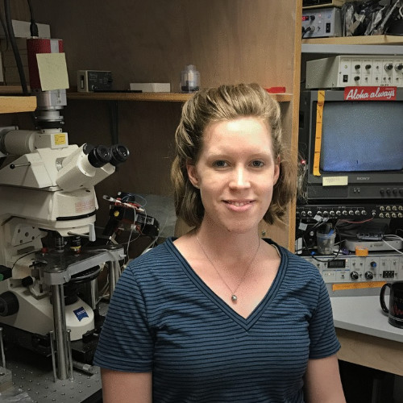
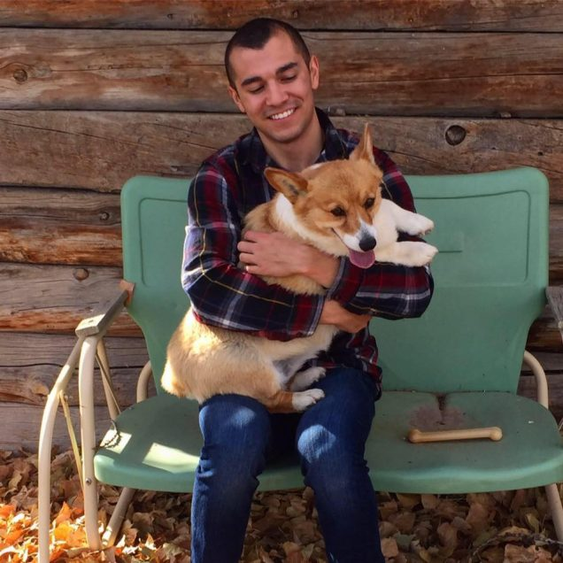

Dr. Liz Arnold
Dr. Liz Arnold received her Ph.D. at the University of Texas at Austin. Throughout her career, she has done work for multiple notable
pharmaceutical companies in New England such as Pfizer, Vertex, and Novartis. Currently, she works as a scientific-technical leader
at the Novartis Institutes for Biomedical Research. In this episode, Liz gives a thoughtful reflection on her undergraduate experience,
and we explore the question “What do many students get wrong about scientific work in pharmaceuticals and industry?”

Ph.D. Candidate Zach Gardner
Zach Gardner is currently a graduate student at the Man Lab studying Autism Spectrum Disorder on the cellular and molecular level.
He got his BS in biological sciences in 2014 from Colorado Mesa University. In this episode, we reflect on the graduate school process,
discuss some bomb cooking recipes, and delve into the life of a researcher in the city of Boston.
Dr. Kyle Gobrogge - A Comfort in Naivete, the Journey Begins
In this episode of Office Hours, Ian and Ankur set up shop in the office of their 'Principles of Neuroscience'
lab professor Dr. Kyle Gobrogge. An excellent teacher and an expert in the field of neurobiology, Dr. Gobrogge has won numerous awards
for his work as an educator and researcher, including the 2008 K. Patricia Cross Future Leaders Fellowship of the AAC&U. In this first
episode, we cover various topics ranging from traits of successful students in research to maintaining a work-life balance to the impact
that policy can have on how research is conducted.